The Blender round (2026-11-16)
Three jobs from the parent's list: plain workers to walk the Climb's floors, the cream and white robes that glowed in the Sands' and the War's light, and three notes on the older arenas from the model review's round 2.
In short
- Six walkers built: two Coast-folk for the Sea (a dockhand, a fishwife) and one plain worker for each other chapter. Same skeleton as the Climb's people, about their size and triangles, plainer than the named people (no gold, no crowns; only the Deep's has a small light). Not in the game yet: the life code's model table picks them (the table below says which goes where).
- Robes 15 % darker on eight people; they no longer glow white in their floors' light.
- Arenas: Frost's low ice shards were real and are fixed; the Temple's lintels are a deliberate ruin and stay; the Glade's tree crowns are real, and the fix is one line in the arena code for the parent (tried here, not committed).
- No fight changed: the four speed prints (Temple duel, Sands floor, Frost duel, Glade duel) are the same before and after.
1. Walkers for the Climb's life
Built the way the Climb's people are built (blender/tower/build.py, folk.py, one module per figure), on the
same 65-bone skeleton: bone names and order the same as every person's, bind matrices within the people's own spread (body
proportions). The walkers play the pack's walking clip with both arms (walkers.ts), so their hands are empty: everything
they carry rides on the back or the head.
| Chapter | Model (public/models/tower/) | Who | People | Size | Triangles | Materials |
|---|---|---|---|---|---|---|
| Sea | sea_dockhand_v4.glb | The Dockhand: crate on a porter's frame | Coast folk | 461 KB | 23,173 | 11 |
| Sea | sea_fishwife_v4.glb | The Fishwife: creel with the catch | Coast folk | 530 KB | 26,432 | 12 |
| Wood | wood_cutter_v4.glb | The Woodcutter: bundle of sticks, axe | Wood folk, unsworn (no horns) | 464 KB | 23,359 | 10 |
| Sands | sands_water_v4.glb | The Water-Carrier: jar on the head | Dune folk | 478 KB | 24,656 | 9 |
| Deep | deep_miner_v4.glb | The Ore-Carrier: ore pannier, pick, a dim shard at the belt | Kilnborn of the far halls (old colour) | 486 KB | 24,890 | 11 |
| War | war_gleaner_v4.glb | The Gleaner: sack of gathered arrows, crimson and azure | Harrowmark's last people | 505 KB | 24,508 | 11 |
The Climb's people for comparison: 455 to 545 KB, 23,600 to 29,530 triangles, 9 to 13 materials.
For the parent (the model table): Sea floors 1-10: sea_dockhand and sea_fishwife (in turn, in place of the
trader stand-in); Wood 11-20: wood_cutter; Sands 21-30: sands_water; Deep 31-40: deep_miner; War 41-50:
war_gleaner. Each as models/tower/<id>_v4.glb. No registry line is needed (they are not floor people;
folk.ts is untouched).
Lore: Coast folk have sea-tanned skin, salt-bleached hair and the blue tide lines on their forearms, and read nothing like the Drowned docker (warm skin, pale hair, light clothes, no hook). The Woodcutter is unsworn, so he has no horns. The Water-Carrier wears sand linen darker than the new robe cream (which no longer glows), though she was not looked at in the Sands' own light. The Ore-Carrier keeps the old colour of the far halls and his beard is braided long, as Kilnborn wear it when they do not work the fire. The Gleaner wears an undyed armband that marks her as on neither side.
Line-ups: Sefu, the walker(s) walking, three of the chapter's people, Kaia
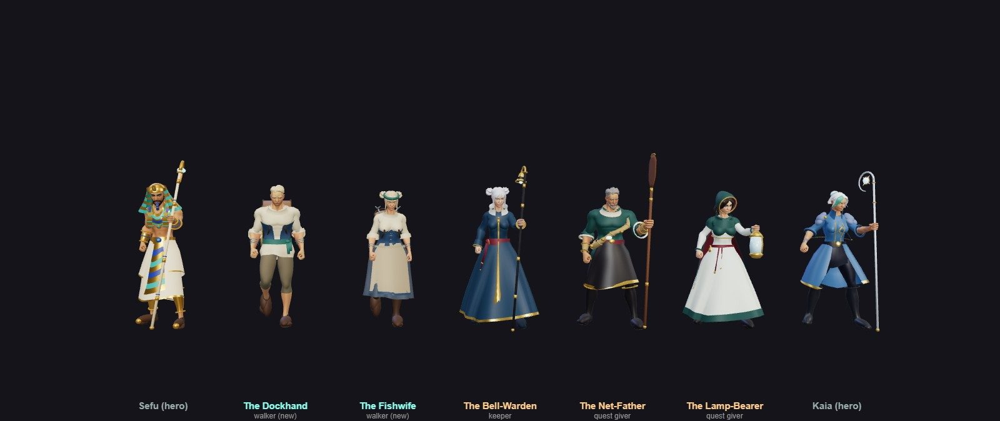
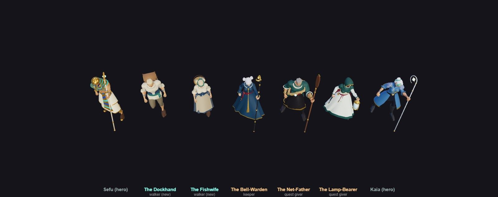
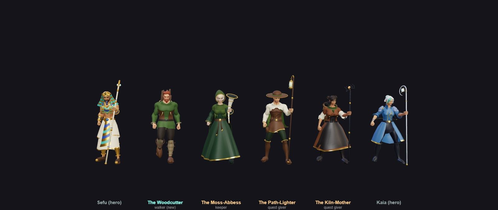
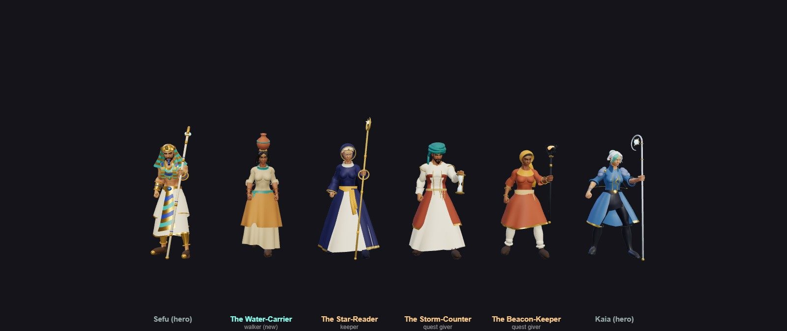
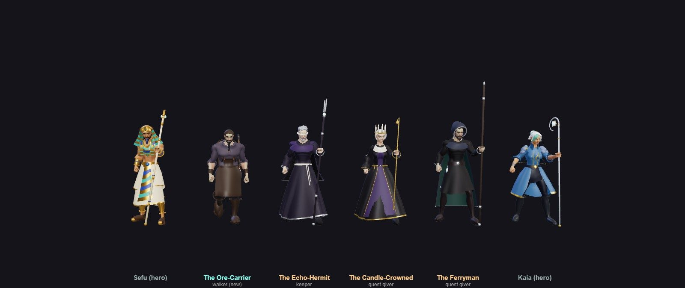
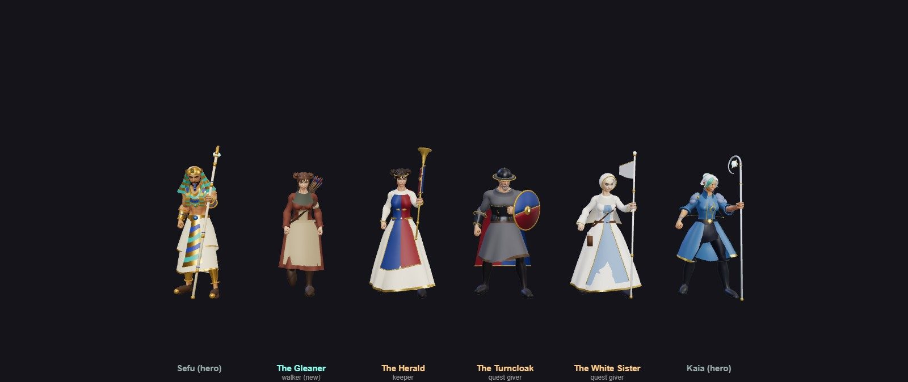
From the game's camera: Wood, Sands, Deep, War.


Each walking: four moments of the stride from the game's camera, then front, side, back and the face
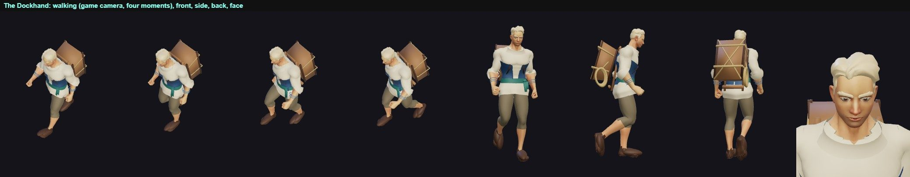
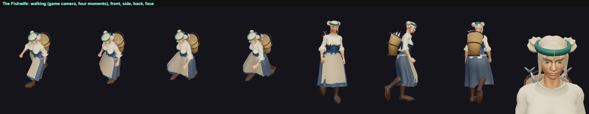
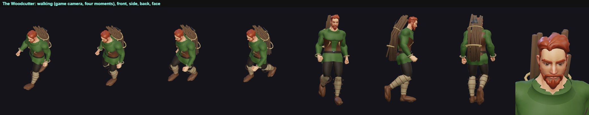
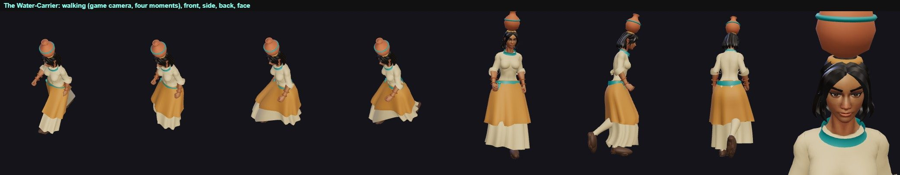
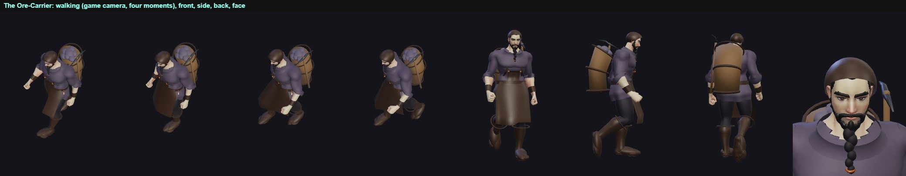
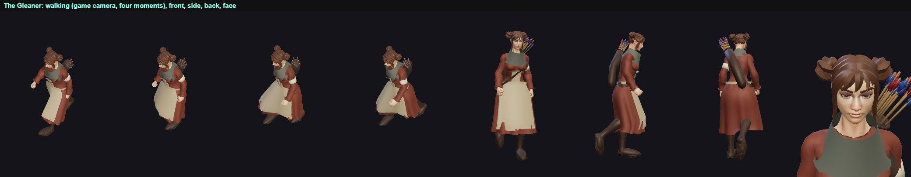
Skirts follow the legs through the stride, and nothing comes through the loads.
Work clips in the pack (listed, not added)
The animation file every player downloads holds 34 clips (1,231 KB). Clips that would suit people at work:
Fixing_Kneeling (5.2 s, kneeling at a task), Farm_Harvest, Farm_PlantSeed, Farm_Watering,
Push_Loop, PickUp_Table, Interact, Idle_Talking_Loop, Idle_FoldArms_Loop,
Idle_Rail_Loop, and Walk_Carry_Loop (a box held in front with both hands). Six of them together add 366 KB (+30 %),
which is not small, and nothing can play them until the life code asks for them, so the file is unchanged. Walk_Carry_Loop also
does not suit these six, whose loads ride on the back. To add some later (the first line rebuilds today's file byte for byte; append
names to the two lists):
node pipeline/tools/strip-anim.mjs public/models/anim/ual.glb pipeline/assets/ual/UAL1_Standard.glb Idle_Loop,Walk_Loop,Jog_Fwd_Loop,Sprint_Loop,Sword_Idle,Sword_Attack,Punch_Jab,Punch_Cross,Spell_Simple_Enter,Spell_Simple_Idle_Loop,Spell_Simple_Shoot,Spell_Simple_Exit,Hit_Chest,Hit_Head,Death01,Jump_Loop,Jump_Land,Roll,Idle_Torch_Loop,Fixing_Kneeling pipeline/assets/ual/UAL2_Standard.glb Sword_Regular_A,Sword_Regular_A_Rec,Sword_Regular_B,Sword_Regular_B_Rec,Sword_Regular_C,Sword_Dash,Melee_Hook,Melee_Hook_Rec,OverhandThrow,Hit_Knockback,TreeChopping_Loop,Idle_Shield_Loop,Idle_Lantern_Loop,Zombie_Idle_Loop,Zombie_Scratch,Farm_Harvest
Then check the heroes are unchanged: python pipeline/tools/hero-prints.py check Anka,Kaia,Sefu --port 5192.
2. The robes that glowed
About 15 % darker cloth, the same step on every channel (cream to #cdbf9c as decided; the whites a warm off-white of the
same step). Only the colour changed: skeleton and bind matrices identical to the committed models, triangles and materials the same.
(An unchanged rebuild of these eight comes out 3 to 6 KB smaller than the committed files, the skin picture encoded again; the same
here.)
| Person | Cloth | Before | After |
|---|---|---|---|
| Star-Reader, Storm-Counter, Silk-Merchant, Glass-Seller, Beacon-Keeper (Sands); Camp-Mother (War) | cream | #e2d6b8 | #cdbf9c |
| The Herald (War) | cream | #e2d8c0 | #cdc1a3 |
| The White Sister (War) | white habit | #e6e2d8 | #d1cab7 |
| The White Sister (War) | linen | #d8d2c2 | #c4bca5 |
In their floors, close (each pair: before, after)
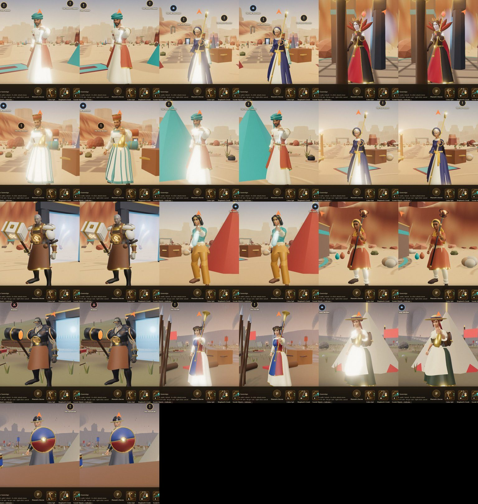
Floors 21, 22 and 41. Before, the Storm-Counter, the Silk-Merchant and the Camp-Mother blew out to white; after, their folds, stripes and trims show. Heroes in the same shots are unchanged.
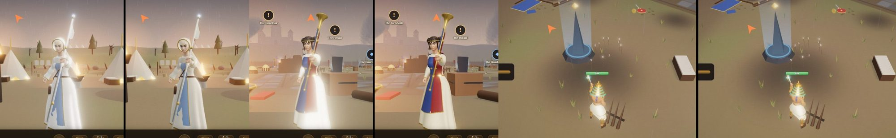
Floor 42: the White Sister (still white, the truce's white, but no longer glowing) and the Herald (her skirt no longer blooms); then the game's camera.
From the game's camera: before, after. In every pair looked at (floors 21, 22, 41 and 42) the darker step was enough, so none went further.


3. The arenas
Measured with the way pipeline/tools/arena-fit.js measures (a hero's centre is kept 0.5 m off a cover's capsule, so a mesh
more than about 0.5 m past it is where a hero stands), on every vertex of the arena as the game builds it. arena-fit.js
itself reads only the heroes'-style arenas, so this was a copy of its measure in a scratch script for the three older ones (they are
placed by the arena code). Then the player's camera in a real duel (Sefu against Kaia), on a computer's screen and on a phone's.
Frost: the low ice pieces were real; fixed
The piece was the toppled ice shard lying at each of the four spires' feet: 1.3 m long, 0.6 m high, reaching 1.18 to 1.20 m past the spire's cover (0.7 m past where a hero is kept). From the player's camera at the nearest zoom, Sefu's foot stood in it. Now 0.45 of its length, tucked against its rock: the spires' low pieces reach at most 0.58 m past cover, and that is the upright crystals at shoulder height, as built. The collision shapes did not change.
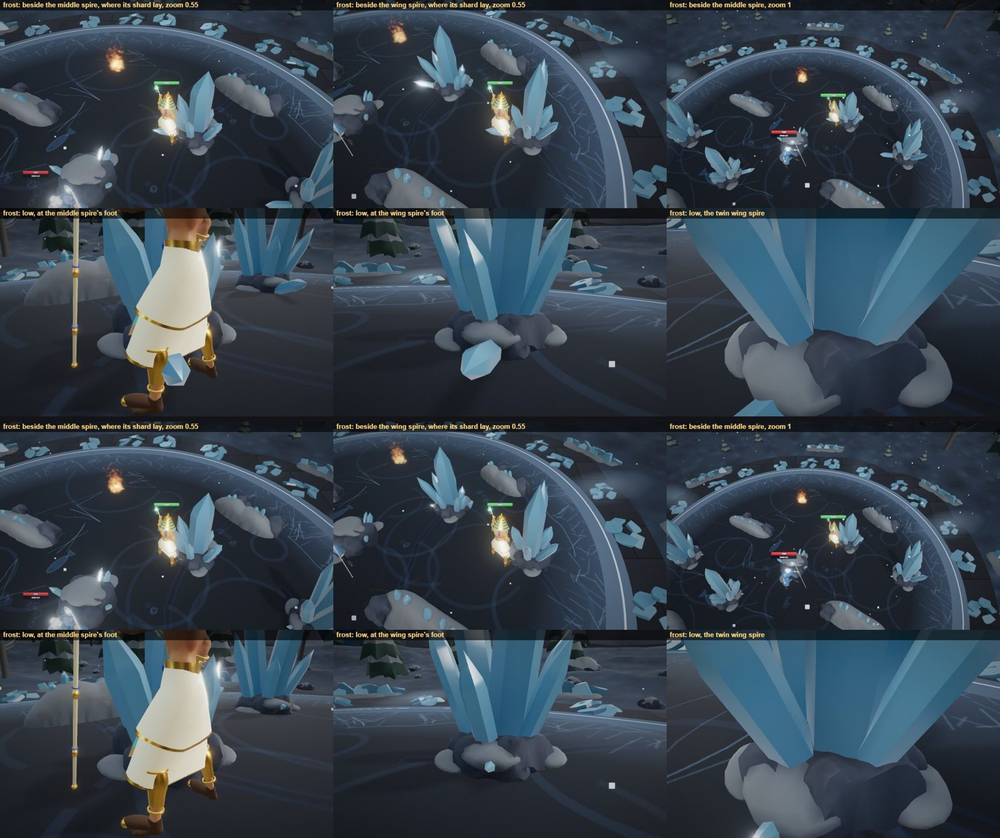
Top: before; bottom: after. Beside the middle spire and the wing spire at zoom 0.55 and 1, then low at their feet.
Measured, top-down: before, after (red: cover; dashed: the hero's 0.5 m; orange and red: mesh below 2.2 m more than 0.3 and 0.6 m off cover).


| Frost cover | Reaches past it, before | After |
|---|---|---|
| Two middle spires | 1.18 m (at 0.6 m high) | 0.58 m (at 2.2 m: the upright crystals) |
| Two wing spires | 1.20 m (at 0.55 m high) | 0.48 m (at 2.2 m) |
| Boulder, four drifts | 0.52, 0.67-0.68 m | the same (not changed) |
How: the older arenas' builds need sculpt helpers (dao_blender) that are not on this computer, so a full rebuild
was not possible. blender/arenas/frost_shard_fix.py opens frost_props.glb, finds the shard in the two spire props
and shrinks it toward its root, and writes the file with the build's own export settings (a second run leaves it alone); frost_props.py
is changed to build the shard the same size, but could not be run here to prove it. Checked: the same 15 objects, names, materials and triangles; the exporter split 1 to 6 vertices more per object.
306 KB (was 305).
Also measured, left as built: the drifts. At each drift's end a dark rock (0.6 m high at most) reaches 0.67-0.68 m past the
drift's thin capsule, about 0.18 m inside where a hero is kept. From the player's camera at the nearest zoom a hero stands against the
rock, touching it, not in it; the drifts are drawn about twice as deep as their capsules by design (frost_props.py), and
round 2 did not flag them. If wanted later, the cover's capsule (not the model) is the part to widen. The measure also found two small
things 4.5 m from any cover at (±0.5, 0): transparent sprite planes (the arena's drifting snow), not props.
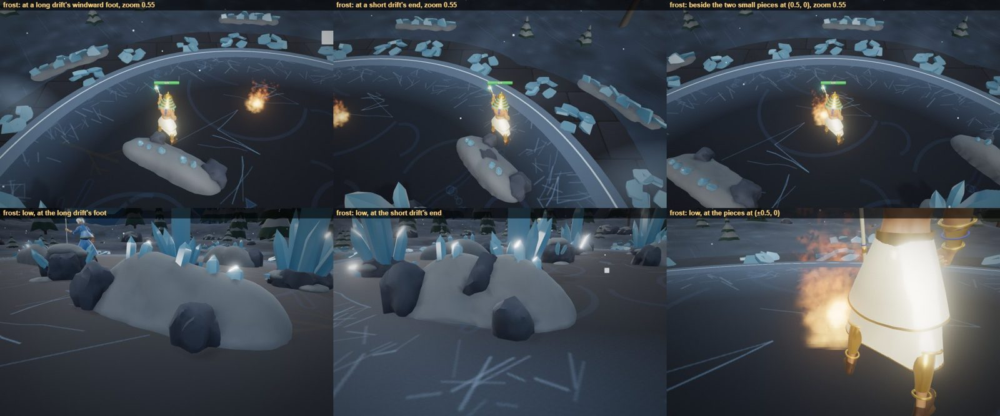
The hero at a long drift's windward foot, at a short drift's end, beside the sprites; then low views of each.
The Temple: the two lintels are a deliberate ruin; left as they are
From the rim (a view no player has) each grand gate's lintel, with its sun disc, reaches past its one whole pylon. That is how the gate
is built: "two pylons, one whole, the other snapped off at about 9.5 m; the lintel broken short of the snapped pylon"
(temple_backdrop.py), 34 m out beyond the ring. From the player's camera at the widest zoom, at every edge, it reads as a
slab beyond the ring and nothing looks wrong. All the Temple's ground pieces sit inside their cover (0.4 m at most).
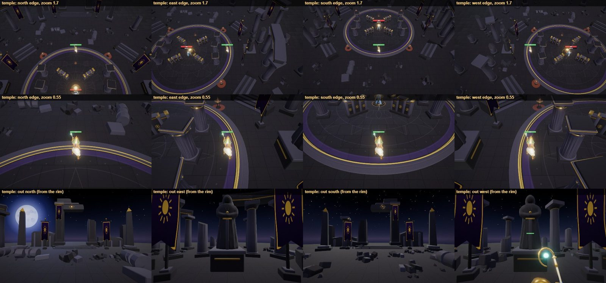
Rows: the player's camera at the widest zoom (1.7) at the four edges; at the nearest (0.55); the rim looking out (the lintels are in "out north" and "out south").
The Glade: the tree crowns are real; the fix is one line for the parent
At the widest zoom with the hero at the west edge, one tree's crown (at about (−17, 17), 7.5 to 17.8 m up) filled a quarter of the
screen, on a phone too; at the east edge two or three crowns filled the upper right. The trees come from the arena code: tall trees may
stand anywhere beyond |x| 13, on the idea that the camera stays on the z axis, but the player's camera follows the hero out to x ±11,
18 m to the south and 25 m up. There is no rule that fades things near the camera. Making every crown smaller would change the whole
wood (and that build cannot run here either), so the smallest change is to keep tall trees off the camera's side of the ring. In
src/arenas/glade.ts, in the tree loop after if (Math.hypot(x - 16, z - 27) < 9) continue;:
if (z > RING.z + 2 && Math.abs(x) < 26 && Math.hypot(x - RING.x, z - RING.z) < 31) continue;
Tried in this worktree and reverted (the file is not this round's to commit): the tree loop still looks for 21 trees and finds them further out (not counted one by one); the west crown is gone; the east one is pushed into the corner; the wood still closes in. The line changes the arena's dice for everything placed after the trees, so the small mushrooms inside the ring and the other seeded dressing land in other places. The Glade duel's fight print stays the same (85a1182f).
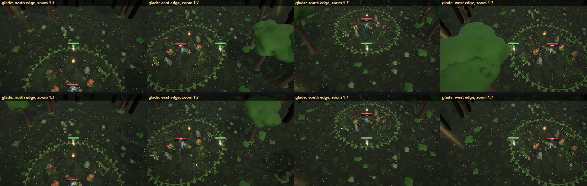
A computer's screen, the hero at the north, east, south and west edges at zoom 1.7. Top: today; bottom: with the line.
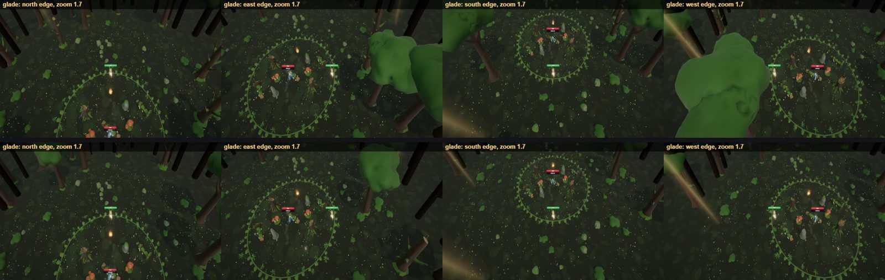
The same on a phone's screen (844 × 390).
No fight changed
Scene (perf.py scenes, desktop) | Before | After |
|---|---|---|
| duel-temple | 90b1abaa | 90b1abaa |
| world-3 (the Sands floor, the robes) | 45b46573 | 45b46573 |
| arena-frost | 20543026 | 20543026 |
| arena-glade | 85a1182f | 85a1182f (and with the Glade line tried) |
Frame times are not compared: other agents were using the machine (the after runs were 1.2 to 2 times slower everywhere, the same fights). One world-3 run came out another fight because a file was saved while it played and its page reloaded; run again untouched it matched.
Waiting, and not live
- The parent: put the six walkers in the life code's model table (the list in section 1).
- The parent: the one line in
src/arenas/glade.ts(section 3), if wanted. - The lore agent: the six walkers' names (the Dockhand, the Fishwife, the Woodcutter, the Water-Carrier, the Ore-Carrier, the Gleaner) and the Gleaner's trade (she gleans spent arrows from the furrows and sells them back to both banners) are new and not in the codex.
- Not live: everything here (the robes, Frost's shards, the walkers' models). One News entry is written (the robes and Frost).